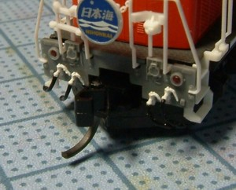

| 部品単体の写真はありません。。。 |
5個 / 400円。
ホワイトメタル製です。 ホワイトメタル製という材質とその形状からふにゃふにゃで、 電機のスカートにつける分にはよいのですが ディーゼル機や客車の床下につけていると触るたびに変形して不安になります。。。 |
|  |
3個 / 600円
ロストワックス製。原型はN-070と同じだと思われます。 お値段張りますが、供給面・強度的にも十分です。 原型は同じでも明らかにシャープで、上の N-070 の取り付け状態とコック部を比較すると細いのがわかります。 ワールド工芸製と比較しても、コックの細さはピカイチです。 現在は、主にこのパーツを使ってます。 |
|
3個 / 450円
ロストワックス製。 同社の蒸気機関車用のパーツを分売しているという雰囲気です。 銀河のものとの大きな違いは、台座がついていることとホース先端部のコネクタ形状が忠実に再現されていることです。 ブレーキホースに合わせてコックは台座に対して斜めに設計されており、 元空気ダメ引き通し管や釣合管として使用する場合は要注意です。 (DD54で使ったときは、台座の角度を無視しました。 また、コックが飛び出すためカプラーの可動域に要注意です。 |
|
20年くらい前の製品で、すでに廃番になってます。
ちなみに取り付け状態のキハ58、はるか昔の作品ですがKATOの非冷房車にダミーカプラーと胴受けを取り付け、
ジャンパ栓・スノープロー・エアタンクまで取り付けたもので思い入れがある車両です。
|